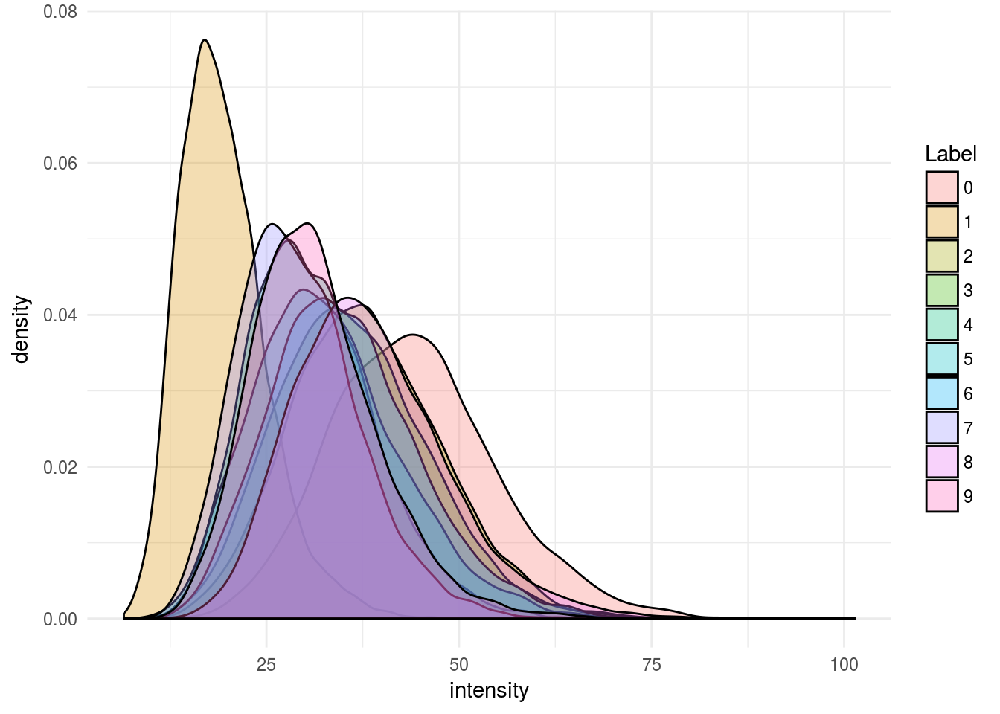
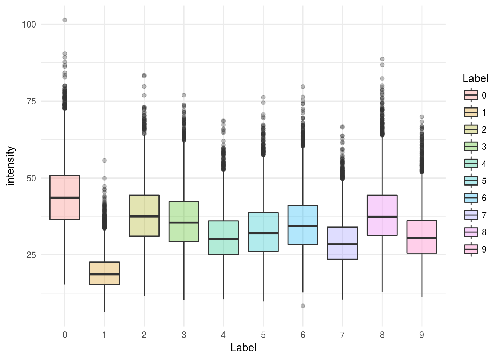
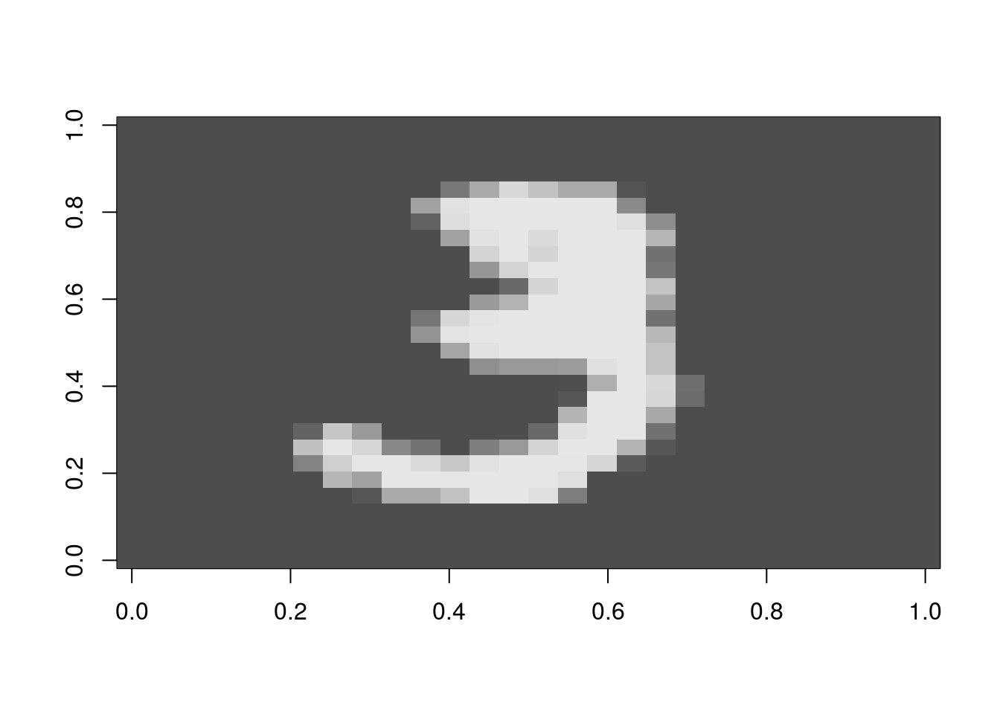
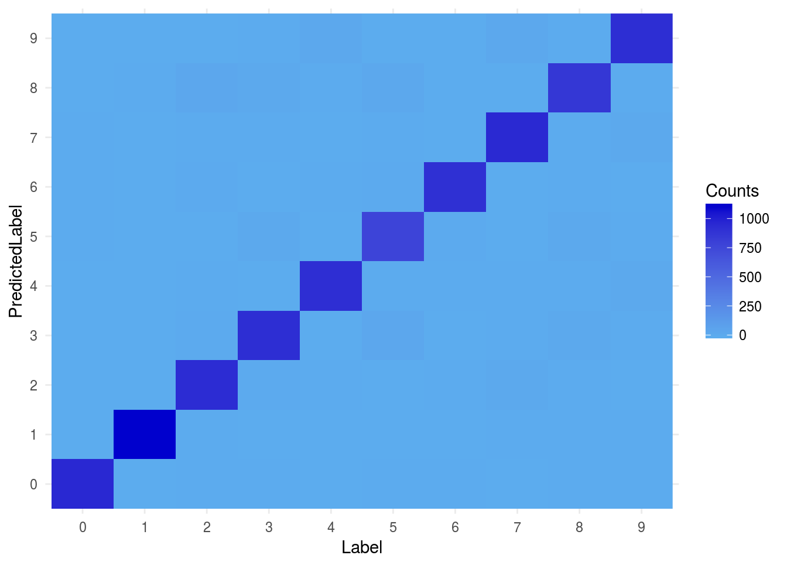
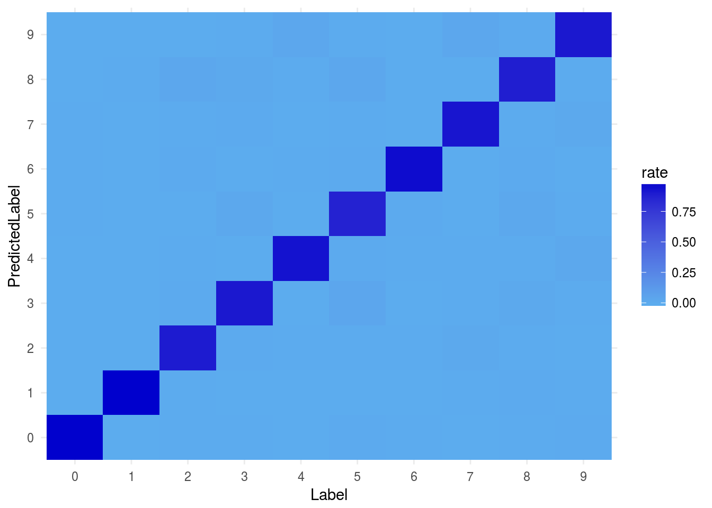
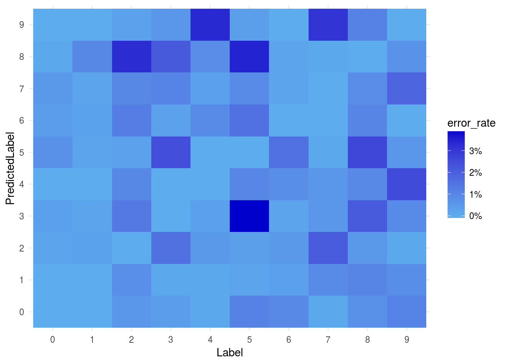

Chapter 4 Classification Models for Computer Vision
4.1 Hand-Written Digit Classifiation
In this module, we will examine the MNIST dataset, which is a set of 70,000 images of digits handwritten by high school students and employees of the US Census Bureau.
MNIST is considered the “hello-world” of the machine-learning world, and is often a good place to start for understanding classification algorithms.
Let’s load the MNIST dataset.
library(MicrosoftML)
library(tidyverse)
library(magrittr)##
## Attaching package: 'magrittr'## The following object is masked from 'package:purrr':
##
## set_names## The following object is masked from 'package:tidyr':
##
## extractlibrary(dplyrXdf)
theme_set(theme_minimal())
mnist_xdf <- file.path("data", "MNIST.xdf")
mnist_xdf <- RxXdfData(mnist_xdf)Let’s take a look at the data:
rxGetInfo(mnist_xdf)## File name: /home/alizaidi/bookdown-demo/data/MNIST.xdf
## Number of observations: 70000
## Number of variables: 786
## Number of blocks: 7
## Compression type: zlibOur dataset contains 70K records, and 786 columns. There are actually 784 features, because each image in the dataset is a 28x28 pixel image. The two additional columns are for the label, and a column with a pre-sampled train and test split.
4.2 Visualizing Digits
Let’s make some visualizations to examine the MNIST data and see what we can use for a classifier to classify the digits.
mnist_df <- rxDataStep(inData = mnist_xdf, outFile = NULL,
maxRowsByCols = nrow(mnist_xdf)*ncol(mnist_xdf)) %>% tbl_dfLet’s see the average for each digit:
mnist_df %>%
keep(is.numeric) %>%
rowMeans() %>% data.frame(intensity = .) %>%
tbl_df %>%
bind_cols(mnist_df) %T>% print -> mnist_df## # A tibble: 70,000 x 787
## intensity Label V2 V3 V4 V5 V6 V7 V8 V9 V10
## <dbl> <fctr> <int> <int> <int> <int> <int> <int> <int> <int> <int>
## 1 35.10842 5 0 0 0 0 0 0 0 0 0
## 2 39.66199 0 0 0 0 0 0 0 0 0 0
## 3 24.79974 4 0 0 0 0 0 0 0 0 0
## 4 21.85587 1 0 0 0 0 0 0 0 0 0
## 5 29.60969 9 0 0 0 0 0 0 0 0 0
## 6 37.75638 2 0 0 0 0 0 0 0 0 0
## 7 22.50765 1 0 0 0 0 0 0 0 0 0
## 8 45.74872 3 0 0 0 0 0 0 0 0 0
## 9 13.86990 1 0 0 0 0 0 0 0 0 0
## 10 27.93878 4 0 0 0 0 0 0 0 0 0
## # ... with 69,990 more rows, and 776 more variables: V11 <int>, V12 <int>,
## # V13 <int>, V14 <int>, V15 <int>, V16 <int>, V17 <int>, V18 <int>,
## # V19 <int>, V20 <int>, V21 <int>, V22 <int>, V23 <int>, V24 <int>,
## # V25 <int>, V26 <int>, V27 <int>, V28 <int>, V29 <int>, V30 <int>,
## # V31 <int>, V32 <int>, V33 <int>, V34 <int>, V35 <int>, V36 <int>,
## # V37 <int>, V38 <int>, V39 <int>, V40 <int>, V41 <int>, V42 <int>,
## # V43 <int>, V44 <int>, V45 <int>, V46 <int>, V47 <int>, V48 <int>,
## # V49 <int>, V50 <int>, V51 <int>, V52 <int>, V53 <int>, V54 <int>,
## # V55 <int>, V56 <int>, V57 <int>, V58 <int>, V59 <int>, V60 <int>,
## # V61 <int>, V62 <int>, V63 <int>, V64 <int>, V65 <int>, V66 <int>,
## # V67 <int>, V68 <int>, V69 <int>, V70 <int>, V71 <int>, V72 <int>,
## # V73 <int>, V74 <int>, V75 <int>, V76 <int>, V77 <int>, V78 <int>,
## # V79 <int>, V80 <int>, V81 <int>, V82 <int>, V83 <int>, V84 <int>,
## # V85 <int>, V86 <int>, V87 <int>, V88 <int>, V89 <int>, V90 <int>,
## # V91 <int>, V92 <int>, V93 <int>, V94 <int>, V95 <int>, V96 <int>,
## # V97 <int>, V98 <int>, V99 <int>, V100 <int>, V101 <int>, V102 <int>,
## # V103 <int>, V104 <int>, V105 <int>, V106 <int>, V107 <int>,
## # V108 <int>, V109 <int>, V110 <int>, ...Visualize average intensity by label:
ggplot(mnist_df, aes(x = intensity, y = ..density..)) +
geom_density(aes(fill = Label), alpha = 0.3)
Let’s try a boxplot:
ggplot(mnist_df, aes(x = Label, y = intensity)) +
geom_boxplot(aes(fill = Label), alpha = 0.3)
4.3 Visualize Digits
Let’s plot a sample set of digits:
flip <- function(matrix) {
apply(matrix, 2, rev)
}
plot_digit <- function(samp) {
digit <- unlist(samp)
m <- flip(matrix(rev(as.numeric(digit)), nrow = 28))
image(m, col = grey.colors(255))
}
mnist_df[11, ] %>%
select(-Label, -intensity, -splitVar) %>%
sample_n(1) %>%
rowwise() %>% plot_digit
4.4 Split the Data into Train and Test Sets
splits <- rxSplit(mnist_xdf,
splitByFactor = "splitVar",
overwrite = TRUE)
names(splits) <- c("train", "test")Let’s first train a softmax classifier using the rxLogisticRegression:
softmax <- estimate_model(xdf_data = splits$train,
form = make_form(splits$train,
resp_var = "Label",
vars_to_skip = c("splitVar")),
model = rxLogisticRegression,
type = "multiClass")## Automatically adding a MinMax normalization transform, use 'norm=Warn' or 'norm=No' to turn this behavior off.
## LBFGS multi-threading will attempt to load dataset into memory. In case of out-of-memory issues, turn off multi-threading by setting trainThreads to 1.
## Beginning optimization
## num vars: 7850
## improvement criterion: Mean Improvement
## L1 regularization selected 3699 of 7850 weights.
## Not training a calibrator because it is not needed.
## Elapsed time: 00:00:18.6072601
## Elapsed time: 00:00:00.0334469Let’s see how we did. Let’s examine our results on the train set:
softmax_scores <- rxPredict(modelObject = softmax,
data = splits$test,
outData = tempfile(fileext = ".xdf"),
overwrite = TRUE,
extraVarsToWrite = "Label")## Elapsed time: 00:00:01.0520198We can make a confusion matrix of all our results:
rxCube( ~ Label : PredictedLabel , data = softmax_scores,
returnDataFrame = TRUE) -> softmax_scores_df
softmax_scores_df %>% ggplot(aes(x = Label, y = PredictedLabel,
fill = Counts)) +
geom_raster() +
scale_fill_continuous(low = "steelblue2", high = "mediumblue")
Here we are plotting the raw counts. This might unfairly represent the more populated classes. Let’s weight each count by the total number of samples in that class:
label_rates <- softmax_scores_df %>%
tbl_df %>%
group_by(Label) %>%
mutate(rate = Counts/sum(Counts))
label_rates %>% ggplot(aes(x = Label, y = PredictedLabel, fill = rate)) +
geom_raster() +
scale_fill_continuous(low = "steelblue2", high = "mediumblue")
Let’s fill out all the correct scores with zeros so we can see the errors more clearly:
label_rates %>%
mutate(error_rate = ifelse(Label == PredictedLabel,
0, rate)) %>%
ggplot(aes(x = Label, y = PredictedLabel, fill = error_rate)) +
geom_raster() +
scale_fill_continuous(low = "steelblue2", high = "mediumblue",
labels = scales::percent)
4.5 Exercises
- Take a look at David Robinson’s tweet on using a single pixel to distinguish between pairs of digits.
- You can find his gist saved in the Rscripts directory.